Portfolio
Over the past two decades, I've had the opportunity to work on dozens of design and interactive projects. Here are some of my favorites.
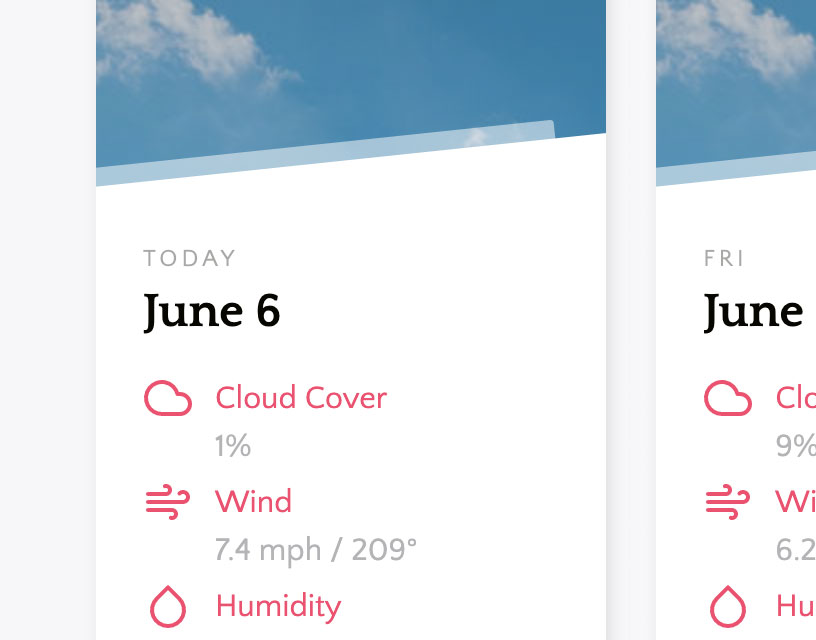
Weather Forecast App
For my second Vue.js app, I created a simple weather forecast app that fetches a five-day forecast from the Open Weather Map API. This project was also part of an interview process for a large digital consulting company.
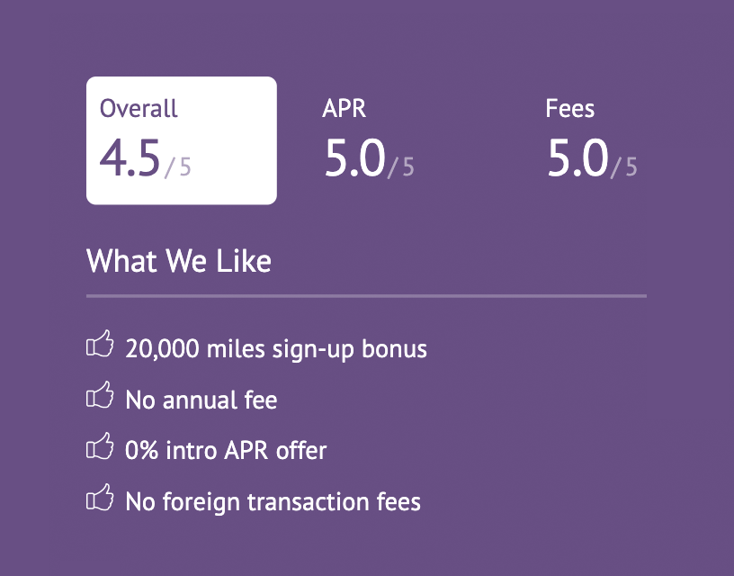
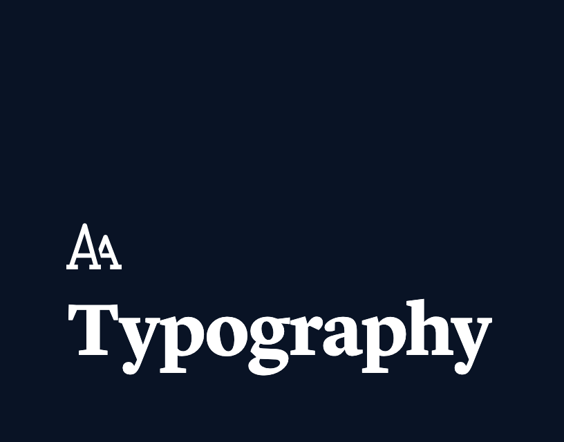
Brand Standards for Small SaaS Company
While at GoSpotCheck, my team and I worked with Denver-based Studio Mast to level up our branding. I created our brand's type standards and secondary color palette, then designed and built a website for our Brand Standards to facilitate company-wide adoption of the new brand.
- 2018-19
- Brand Strategy
- UI Design/Dev
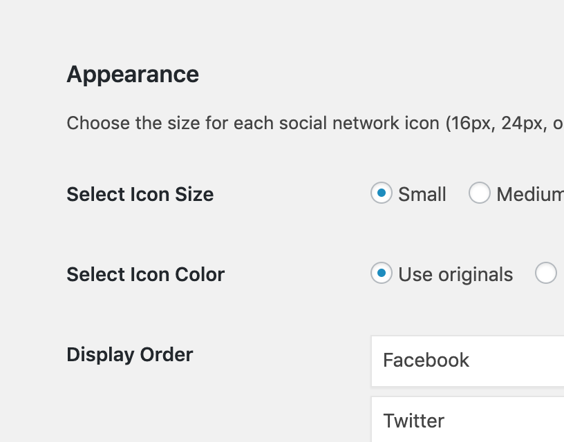
Custom WordPress Social Sharing Plugin
One of the requirements to join the Toptal network as a WordPress developer was to write a custom social sharing plugin using the WordPress Plugin API. If you'd like to see how I write and structure code (specifically PHP), I encourage you to download this plugin and take a look.
- 2018
- PHP
- WordPress
- Plugin API
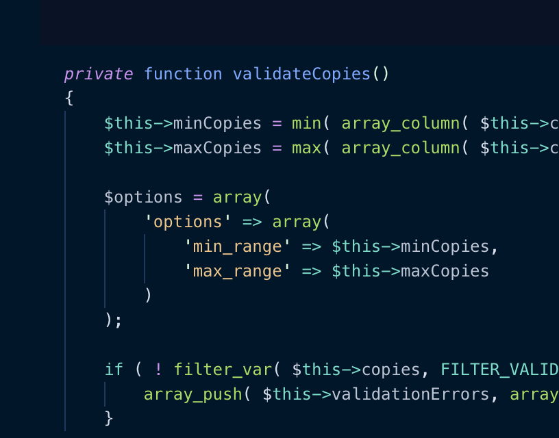
Custom WordPress Pricing Calculators
I replaced Dazzle Printing’s old pricing calculators, which were difficult to update, with a simple interface in a WordPress backend. Pricing is validated and updated via a PHP class and custom jQuery. I am currently rebuilding each calculator from React components for better performance.
- 2018-19
- PHP
- WordPress
- jQuery
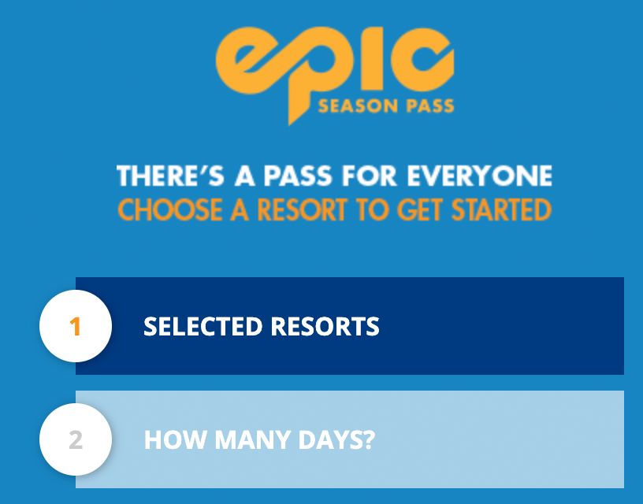
- 2014
- UI/UX Design
- jQuery
- Mobile
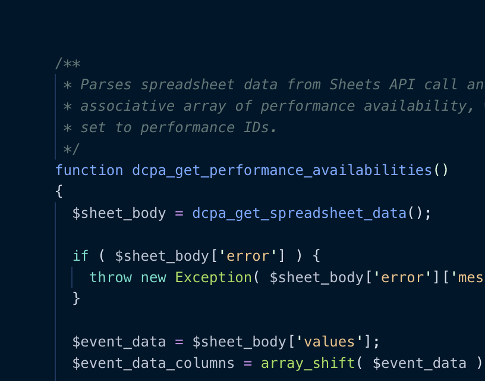
Performing Arts Event Ticketing Carousel
When the Denver Center (DCPA) rebuilt their website, they wanted an unusual and technically challenging way of displaying available show times. I was asked to implement a carousel-style design that used the Google Sheets API to fetch times and availability—and that was editable from a WordPress backend.
- 2018
- UI Dev
- WordPress
- API
- Acting
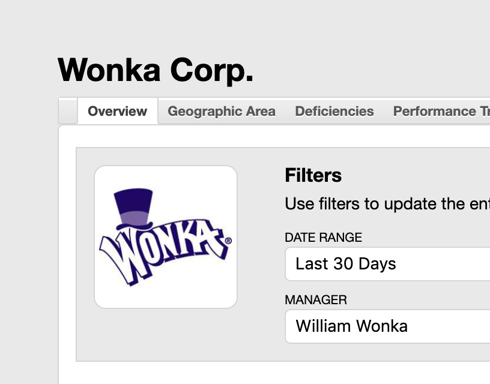
Data Visualization Mockup Tool for SaaS Sales Team
In the early days of GoSpotCheck, the Sales team needed a way to quickly show prospects how our reporting dashboard looked. I built a WordPress-powered backend that let them create mock dashboards in a matter of minutes (it is actually more flexible than the real thing!). Almost four years later, this tool still provides a lot of value.
- 2015
- WordPress
- API
- UI Design
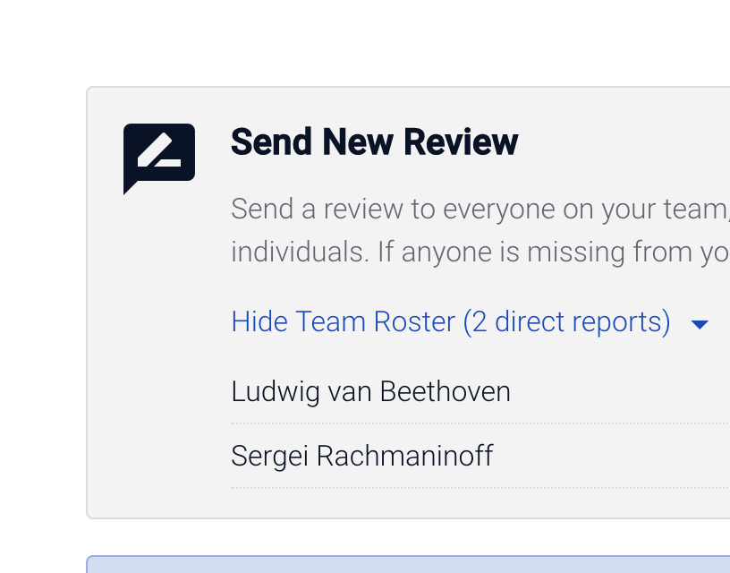
Custom Performance Review Portal
Before GoSpotCheck got big enough to afford enterprise HR software, I was asked to build a performance review system into our internal, WordPress-powered knowledge center. I created a very robust system that, among other things, emailed users when reviews were ready.
- 2015-17
- UI/UX
- WordPress
- PHP
- jQuery
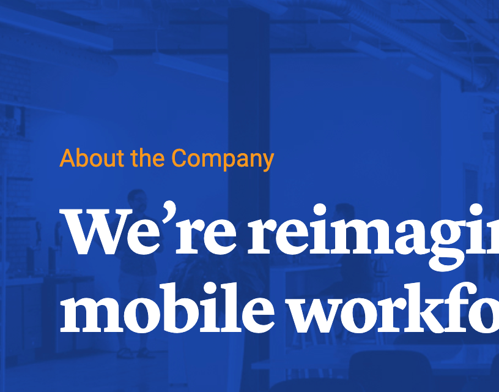
SaaS Website Design and Development
During my four years at GoSpotCheck, I’ve been the primary caretaker, designer, and developer of our main website. The current iteration is the first that fully implements our latest brand standards.
- 2015-19
- UI Design/Dev
- Info Arch
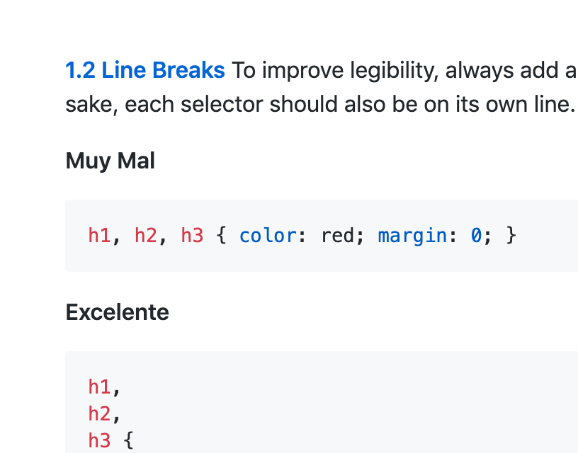
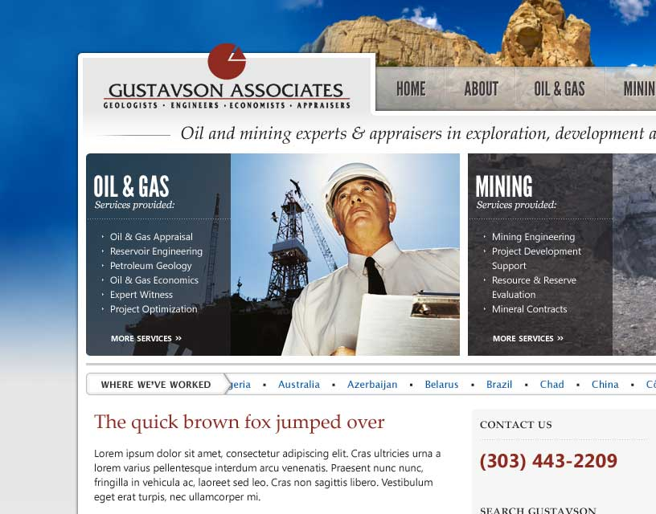
Miscellaneous Old UI Design Mockups
I culled through a pile of old website designs for the clients I had at my digital agency, and was pleasantly surprised at some of the work I did. I think many of these designs would still function well if implemented today, even though they are a bit dated.
- 2010-13
- UI Design
- All-nighters
{kind=link}
{kind=link}
{kind=link}
{kind=link}
{kind=link}